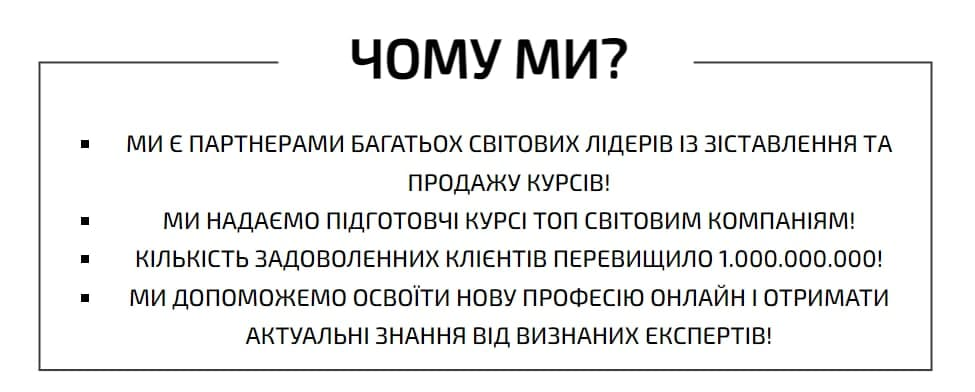

СПИСКИ
СКРІНШОТИ:

ТЕОРІЯ:
Списки відображають інформацію структурно і дають змогу зручно налаштовувати відображення з допомогою CSS, тому вони якнайліпше підходять для створення меню на сайті.
Існує два основних види списків в HTML: нумерований і маркований. Третій тип — список для визначень, який зустрічається доволі рідко.
Нумерований список -> У нумерованому списку біля кожного елемента списку проставляється номер.
Щоб створити такий список, треба написати такий код:
ol
li Пункт1 /li
li Пункт2 /li
li Пункт3 /li
/ol
Розберемся з структурою. Тег ol означає початок списку, а тег li новий елемент. Для тегу нумерованного списку ol можна застосовувати декілька атрибутів, зокрема, start(номер з якого буде починатись наша нумерація) і type( вказує тип нумерації і може мати такі значення — 1, A, a, I, i).
ol start=3 type=A
Маркований список -> У маркованому списку порядок елементів не має такої ролі, як у нумерованому. Біля елементів проставляються спеціальні значки(точки, сфери, квадрати).
Перед наведенням прикладу, скажу що список це має атрибут type(від якого саме і залежить тип значка), який набуває значень disc(по замовчуванні, відображає зафарбований круг), square(зафарбований квадрат), circle(незафарбований круг).
ul type=square
li Сходити в кінотеатр /li
li Зустріч з друзями /li
li Гра у пейнтбол /li
/ul
Щоб створити маркований список використовуєм тег ul.